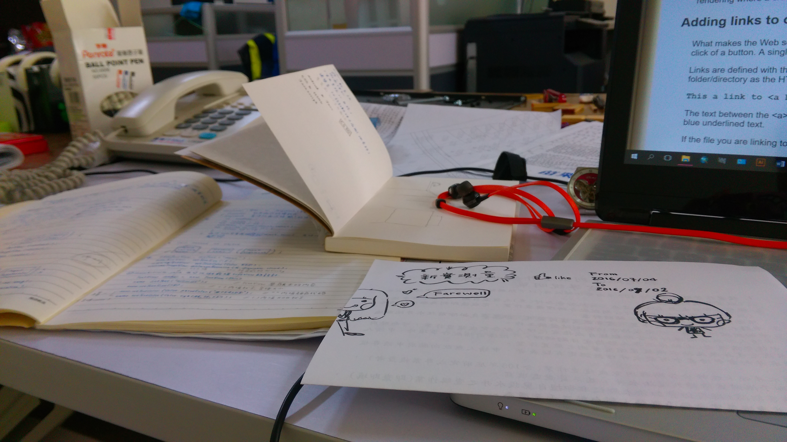

一個半月說長不長說短不短，一轉眼就一劃下句點了，還真有些不捨，剛開始想著一個半月的實習日子多麼漫長，每天數著還有幾天結束，沒想到一眨眼的時間就要離開了。除了對測量這個行業有了更多更深的了解，並且把一些學校學的理論的知識與實務做結合，而不僅僅只是在腦海中模糊片段的記憶。在新實的大家對我的照顧與包容，還有不厭其煩的指導，讓我能順利完成大大小小的任務，除了感謝還是感謝；遇到的每個人、對我說的每句話我都會記得，真的很幸運能有機會在這裏實習，這是我最後一個暑假最美好的回憶 